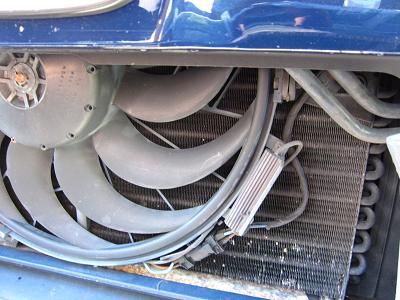
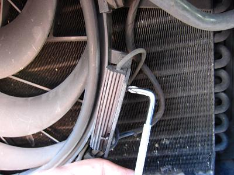
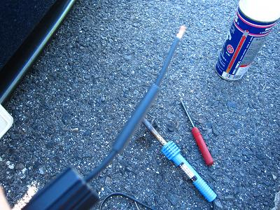
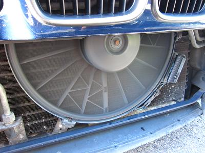

 水温の上昇は特にエアコンＯＮ時に顕著に見られた。 ファンカップリングもラジエターも交換したばかりでしっかりしている。クーラントも入っている。 他にE34で冷却系のトラブルといえば電動ファンだ。 電動ファンはエアコンをＯＮにすると強制的にLoで回転するようになっている。 試しにエアコンをＯＮして、キドニーグリルを覗いてみるが、ファンが回転していなかった。
|
 ファンが回転していないとなれば、大概はヒューズ切れかレジスターの不良だ。 ファンは抵抗無く手で回るし、ヒューズも切れていなかった。 これらの理由よりレジスターを交換してみることにした。 このレジスターは21年間１度も交換したことが無かった。 あまりスペースが無いので、レジスターを外すには短いドライバーや写真のようなドライバーを用いると良いだろう。
|
  元々のレジスターを切断し、新しい物と交換する。 ハンダ付けを行って、防水収縮チューブでハンダ部を保護すれば完了だ。 交換後はファンが元気良く回転してくれた。 電動ファンはLoでも結構な風量があって、冷却には必要不可欠なようだ。 近いうちに、電動ファンを制御しているセンサーも交換しておこうと思う。 最近また細かなトラブルが多くなってきたなぁ・・・(-_-)
|